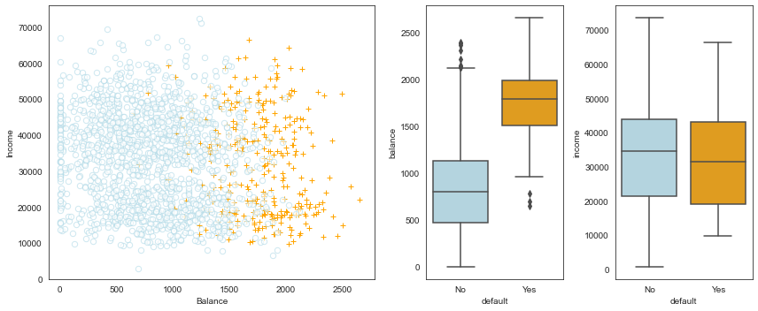
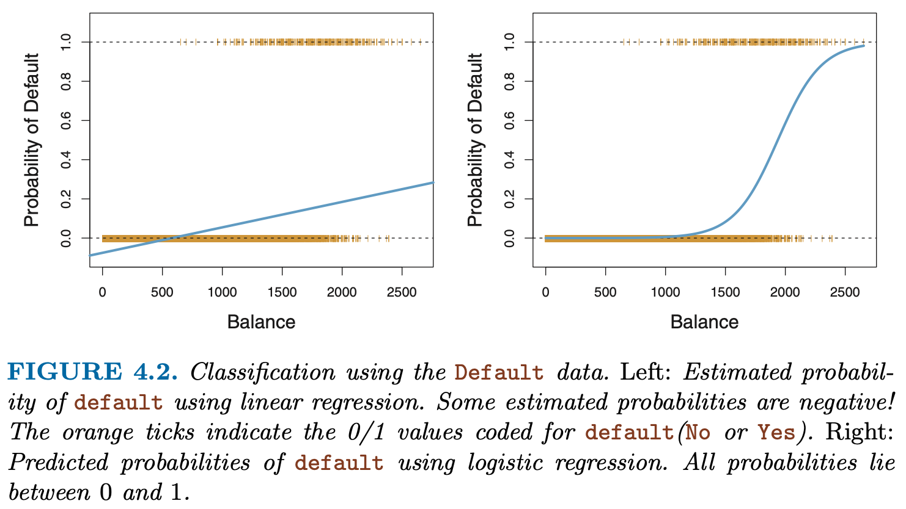

import pandas as pdimport numpy as npimport matplotlib as mplimport matplotlib.pyplot as pltfrom mpl_toolkits.mplot3d import axes3dimport seaborn as snsfrom sklearn.preprocessing import scaleimport sklearn.linear_model as skl_lmfrom sklearn.metrics import mean_squared_error, r2_scoreimport statsmodels.api as smimport statsmodels.formula.api as smffrom scipy import stats#in response to: module 'scipy.stats' has no attribute 'chisqprob' #stats.chisqprob = lambda chisq, df: stats.chi2.sf(chisq, df)#this one I inserted just before class, sorry !!from sklearn.metrics import confusion_matrix, roc_curve, roc_auc_score #, log_lossfrom scipy import special%matplotlib inlinesns.set_style('white')%precision 3
'%.3f'
Load data
#1. default data from ISLR# In R, we exported the dataset from package 'ISLR' to an Excel filedf = pd.read_csv('./data/Default.csv',index_col=0)#2. Titanictitanic = sns.load_dataset('titanic')df.head(3)
default
student
balance
income
1
No
No
729.526495
44361.62507
2
No
Yes
817.180407
12106.13470
3
No
No
1073.549164
31767.13895
# Note: factorize() returns two objects: a label array and an array with the unique values.df.default.factorize()
# We are only interested in the first object. df['default2'] = df.default.factorize()[0]df['student2'] = df.student.factorize()[0]
#are the data balanced#very unbalanced data make modeling VERY tough !!df['default2'].value_counts()#np.mean(df['default2'])
0 9667
1 333
Name: default2, dtype: int64
Data Exploration
Figure 4.1 (ISLR) - Default data set
fig = plt.figure(figsize=(12,5))gs = mpl.gridspec.GridSpec(1, 4)ax1 = plt.subplot(gs[0,:-2])ax2 = plt.subplot(gs[0,-2])ax3 = plt.subplot(gs[0,-1])# Take a fraction of the samples where target value (default) is 'no'df_no = df[df.default2 ==0].sample(frac=0.15)# Take all samples where target value is 'yes'df_yes = df[df.default2 ==1]df_ = df_no.append(df_yes)ax1.scatter(x=df_[df_.default =='Yes'].balance, y=df_[df_.default =='Yes'].income, s=40, c='orange', marker='+', linewidths=1)ax1.scatter(x=df_[df_.default =='No'].balance, y=df_[df_.default =='No'].income, s=40, marker='o', linewidths=1, edgecolors='lightblue', facecolors='white', alpha=.6)ax1.set_ylim(ymin=0)ax1.set_ylabel('Income')ax1.set_xlim(xmin=-100)ax1.set_xlabel('Balance')c_palette = {'No':'lightblue', 'Yes':'orange'}sns.boxplot(x='default', y='balance', data=df, orient='v', ax=ax2, palette=c_palette)sns.boxplot(x='default', y='income', data=df, orient='v', ax=ax3, palette=c_palette)gs.tight_layout(plt.gcf())
/var/folders/h4/k73g68ds6xj791sf8cpmlxlc0000gn/T/ipykernel_61849/1350372965.py:11: FutureWarning: The frame.append method is deprecated and will be removed from pandas in a future version. Use pandas.concat instead.
df_ = df_no.append(df_yes)

Logistic Regression
Recall our fit to the Titanic data from last week and the dilemma that some predictions and interpretations (such as the intercept) often led to survival probabilities outside the range \([0,1]\).
est = smf.ols('survived ~ age + C(pclass) + C(sex)', titanic).fit()print(est.summary().tables[1])
This is not the only shortcoming of linear regression (LR) for binary outcomes! Other problems include heteroskedasticity and incorrect scaling of probabilities even inside the range \([0,1]\).
One solution is to transform the linear output of the (LR) to an S-shape via the sigmoidal function \(s(z) = 1/(1+exp(-z))\), which is the strategy taken by logistic regression (example: Figure 4.2 from the ISLR book):
#passenger Joe, aged 25, Pclass3:oddsJoe = np.exp(3.777-2.5806-2.5228-0.0370*25)print("The odds of survival for Joe are", str(oddsJoe))survProbJoe = oddsJoe/(1+oddsJoe)survProbJoeprint("The probability of survival for Joe are", str(survProbJoe))
The odds of survival for Joe are 0.1052517688905321
The probability of survival for Joe are 0.09522877217033127
from sklearn.metrics import classification_reporty_true = y#The 50% cutoff/threshold is chosen by the user !!y_pred = prob_train[:,0] >0.99#y_predprint(classification_report(y_true, y_pred))#, target_names=['class 0', 'class 1']))
est = smf.logit('default2 ~ balance', data=df)print(est.fit().summary())
Optimization terminated successfully.
Current function value: 0.079823
Iterations 10
Logit Regression Results
==============================================================================
Dep. Variable: default2 No. Observations: 10000
Model: Logit Df Residuals: 9998
Method: MLE Df Model: 1
Date: Sun, 30 May 2021 Pseudo R-squ.: 0.4534
Time: 20:26:48 Log-Likelihood: -798.23
converged: True LL-Null: -1460.3
Covariance Type: nonrobust LLR p-value: 6.233e-290
==============================================================================
coef std err z P>|z| [0.025 0.975]
------------------------------------------------------------------------------
Intercept -10.6513 0.361 -29.491 0.000 -11.359 -9.943
balance 0.0055 0.000 24.952 0.000 0.005 0.006
==============================================================================
Possibly complete quasi-separation: A fraction 0.13 of observations can be
perfectly predicted. This might indicate that there is complete
quasi-separation. In this case some parameters will not be identified.
#Mini Tasks: fit a logistic regression to the Titanic data#Try to make sense of the coefficients!est = smf.logit('survived ~ C(pclass) + C(sex)', data=titanic)print(est.fit().summary().tables[1])
Optimization terminated successfully.
Current function value: 0.464023
Iterations 6
survived
0
1
row_0
False
468
109
True
81
233
Coefficients as Odds
For “normal regression” we know that the value of \(\beta_j\) simply gives us \(\Delta y\) if \(x_j\) is increased by one unit.
In order to fully understand the exact meaning of the coefficients for a LR model we need to first warm up to the definition of a link function and the concept of probability odds.
we modify the right hand side such that (i) the model is still basically a linear combination of the \(x_j\)s but (ii) the output is -like a probability- bounded between 0 and 1. This is achieved by “wrapping” a sigmoid function \(s(z) = 1/(1+exp(-z))\) around the weighted sum of the \(x_j\)s:
The sigmoid function, depicted below to the left, transforms the real axis to the interval \((0;1)\) and can be interpreted as a probability.

The inverse of the sigmoid is the logit (depicted above to the right), which is defined as \(log(p/(1-p))\). For the case where p is a probability we call the ratio \(p/(1-p)\) the probability odds. Thus, the logit is the log of the odds and logistic regression models these log-odds as a linear combination of the values of x.
Finally, we can interpret the coefficients directly: the odds of a positive outcome are multiplied by a factor of \(exp(\beta_j)\) for every unit change in \(x_j\). (In that light, logistic regression is reminiscient of linear regression with logarithmically transformed dependent variable which also leads to multiplicative rather than additive effects.)
When your data are linearly separable there is (ironically) a fitting problem ! See iris example below
Logistic regression preserves the marginal probabilities. The sum of the predicted probability scores for any subgroup of the training data (which includes all of it) will be equal to the number of positives.
What is deviance ? Deviance (also referred to as log loss) is a measure of how well the model fits the data. It is 2 times the negative log likelihood of the dataset, given the model.
In Python, you can use the log_loss function from scikit-learn, with documentation found here. If you think of deviance as analogous to variance, then the null deviance is similar to the variance of the data around the average rate of positive examples. The residual deviance is similar to the variance of the data around the model. As an exercise we will calculate the deviances in a homework.
Pseudo \(R^2\)McFadden’s \(R^2\) is defined as \(1−LL_{mod}/LL_0\), where \(LL_{mod}\) is the log likelihood value for the fitted model and \(LL_{0}\) is the log likelihood for the null model which includes only an intercept as predictor (so that every individual is predicted the same probability of ‘success’).
For a logistic regression model the log likelihood value is always negative (because the likelihood contribution from each observation is a probability between 0 and 1). If your model doesn’t really predict the outcome better than the null model, \(LL_{mod}\) will not be much larger than \(LL_{0}\) , and so \(LL_{mod}/LL_0 \sim 1\) , and McFadden’s pseudo-R2 is close to 0 (your model has no predictive value).
Conversely if your model was really good, those individuals with a success (1) outcome would have a fitted probability close to 1, and vice versa for those with a failure (0) outcome. In this case if you go through the likelihood calculation the likelihood contribution from each individual for your model will be close to zero, such that \(LL_{mod}\) is close to zero, and McFadden’s pseudo-R2 squared is close to 1, indicating very good predictive ability.
The NSFG dataset includes 244 variables about each pregnancy and another 3087 variables about each respondent. Maybe some of those variables have predictive power. To find out which ones are most useful, why not try them all? Testing the variables in the pregnancy table is easy, but in order to use the variables in the respondent table, we have to match up each pregnancy with a respondent. In theory we could iterate through the rows of the pregnancy table, use the caseid to find the corresponding respondent, and copy the values from the correspondent table into the pregnancy table. But that would be slow.
A better option is to recognize this process as a join operation as defined in SQL and other relational database languages (see). Join is implemented as a DataFrame method, so we can perform the operation like this:
do not run this cell, for completeness, I show how the joined dataframe was created:
from __future__ import print_function, division
import numpy as np
import nsfg
preg = pd.read_hdf('../data/pregNSFG.h5', 'df')
#only look at live births
live = preg[preg.outcome == 1]
live = live[live.prglngth>30]
resp = nsfg.ReadFemResp()
resp.index = resp.caseid
join = live.join(resp, on='caseid', rsuffix='_r')
#save to native python format:
#http://pandas.pydata.org/pandas-docs/version/0.23/generated/pandas.DataFrame.to_hdf.html
join.to_hdf('JoinedpregNSFG.h5', key='df', format='table',complevel =9)
live = pd.read_hdf('../data/JoinedpregNSFG.h5','df')live.head()
#define first babiesfirsts = live[live.birthord ==1]#and all others:others = live[live.birthord !=1]
# from this discussion, it seems that statsmodels still uses the defunct# chisqprob, so we have to define it ourselves:# https://github.com/statsmodels/statsmodels/issues/3931from scipy import statsstats.chisqprob =lambda chisq, df: stats.chi2.sf(chisq, df)stats.chisqprob(10,3)
The mother’s age seems to have a small, non significant effect.
Exercise 11.2 The Trivers-Willard hypothesis suggests that for many mammals the sex ratio depends on “maternal condition”; that is, factors like the mother’s age, size, health, and social status. See. Some studies have shown this effect among humans, but results are mixed. As an exercise, use a data mining approach to test the other variables in the pregnancy and respondent files.
In the solution for exercise 11.2 the author uses a data mining approach to find the “best” model:
(Task: can we find out the meaning of the 2 new variables??)


Comments
When your data are linearly separable there is (ironically) a fitting problem ! See iris example below
Logistic regression preserves the marginal probabilities. The sum of the predicted probability scores for any subgroup of the training data (which includes all of it) will be equal to the number of positives.
What is deviance ? Deviance (also referred to as log loss) is a measure of how well the model fits the data. It is 2 times the negative log likelihood of the dataset, given the model.
\[ dev = - \sum_i{y_i \cdot \log p_i + (1-y_i) \cdot \log (1-p_i)} \]
In Python, you can use the log_loss function from scikit-learn, with documentation found here. If you think of deviance as analogous to variance, then the null deviance is similar to the variance of the data around the average rate of positive examples. The residual deviance is similar to the variance of the data around the model. As an exercise we will calculate the deviances in a homework.